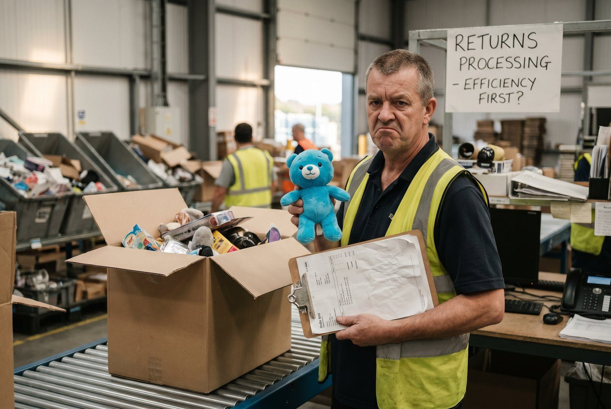

Spørg en virksomhedsejer hvad en fejlordre koster, og de fleste svarer "porto-retur og ny forsendelse". Det er ca. 60-80 kr. Den reelle pris er 2-5x højere.
Det er ikke en lille nuance. For en webshop med 2.000 ordrer/måned og 2% fejlrate er forskellen på 80 kr. vs. 300 kr. per fejl: 4.800 kr. vs. 18.000 kr. om måneden. 160.000 kr. om året i undervurderede fejlomkostninger.
👉 Vil du vide hvad fejl koster dit lager? Kontakt SmartPack
Den reelle fejlomkostning: alle poster
Direkte omkostninger
- Returporto: 40-70 kr. (afhængig af transportr og vægt)
- Ny forsendelse: 40-80 kr.
- Emballage til ny forsendelse: 10-20 kr.
- Varekompensation (hvis kunden beholder fejlvaren): varens kostpris
Indirekte omkostninger (går gerne unoteret)
- Kundeservice-tid: 15-30 min per klage x medarbejderpris = 70-150 kr.
- Lager-tid til returhåndtering: 10-20 min x medarbejderpris = 50-90 kr.
- Systemregistreringer og opdateringer: 15-30 kr.
Tabt omsaetning (den post folk glemmer)
En statistisk andel af kunder der får en fejl, køber ikke igen. Selv med en konservativ antagelse om 10% churn-rate på fejlramt kunder, og en LTV på 500 kr. per kunde, tilføjer det 50 kr. per fejl i forventet tabt omsaetning.
Samlet eksempel
| Post | Kr./fejl |
|---|---|
| Returporto + ny forsendelse | 100 |
| Emballage ny forsendelse | 15 |
| Kundeservice (20 min) | 100 |
| Lager-tid returhåndtering | 65 |
| Systemadministration | 20 |
| Tabt LTV (statistisk) | 50 |
| TOTAL | 350 kr./fejl |
Hvad er en normal fejlrate?
Uden scan-baseret plukning: 1-3% er normalt. Det virker lille. Men på 2.000 ordrer/md er det 20-60 fejl/md x 350 kr. = 7.000-21.000 kr./md = 84.000-252.000 kr./år.
Med scan-baseret WMS falder fejlraten typisk til 0,1-0,3%. På 2.000 ordrer/md er det 2-6 fejl/md x 350 kr. = 700-2.100 kr./md. Besparelsen er 6.300-18.900 kr./md.
Sådan reducerer du fejlraten
De to mest effektive tiltag:
- Scan-baseret plukning. Plukker scanner vare og position. Systemet validerer mod ordre. Fejllæsning elimineres. Dette enkeltting reducerer fejlrate med 80-90%.
- Scan-baseret pakning. Pakker scanner alle varer i ordren inden lukning. Systmet bekraefter at alt er med. Fanger de fejl der slap igennem plukning.
Det her opdager de fleste for sent
Fejlomkostninger vises sjaldent som en samlet linje i regnskabet. De er spredt over porto (på en linje), løn (på en anden) og tabt omsaetning (slet ikke). Det gør dem usynlige. Men de er reelle.
Sådan understøtter SmartPack det
SmartPack registrerer og rapporterer fejlrate per medarbejder, per varekategori og per periode. Du kan se præcis hvornår og hvem fejlene sker hos, og systemets scan-validering reducerer fejlraten fra dag et.